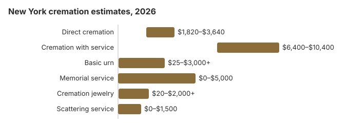

Cremation Costs in New York (2026)
On our estimates a New York direct cremation costs about $2,600, a funeral followed by cremation about $8,000, and a traditional funeral with burial about $10,800. About 55% of New Yorkers are cremated on this site's figures. New York requires a licensed funeral director for every cremation, sets a 24-hour target once a crematory accepts a body, and in New York City adds a medical examiner's review. This page explains those rules, who signs the authorization, city and county help, and the national cemeteries that take urns.
New York Cremation Choices
Direct Cremation
- Lowest New York price
- No service beforehand
- Body goes straight to the crematory
- Ashes back to the family
- A memorial can come later
Cremation with Service
- Funeral first, cremation after
- Viewing can be added
- Ceremony in a chapel or church
- Often comes with a simple urn
- Closest to a traditional funeral
What Each Part of a New York Cremation Costs
| Charge | New York figure | Low to high |
|---|---|---|
| Direct cremation | $2,600 | $1,820 – $3,640 |
| Cremation with service | $8,000 | $6,400 – $10,400 |
| Basic urn | $50 – $300 | $25 – $3,000+ |
| Memorial service | $500 – $2,000 | $0 – $5,000 |
| Cremation jewelry | $50 – $500 | $20 – $2,000+ |
| Scattering service | $200 – $600 | $0 – $1,500 |
How the New York numbers were made: by our cost model, not a canvass of New York crematories, and only a provider's written price list is binding; nothing here is advice. See our method and the disclaimer.
State sources: NYC HRA.

Who Signs and What Happens at a New York Crematory
New York's rules on authorization and crematory timing:
- New York Public Health Law § 4201 gives control of the remains to a written agent first, then the surviving spouse, then a surviving domestic partner, then adult children, parents and adult siblings, and that person is the one who signs the cremation authorization.
- Once a New York crematory accepts the body it must make its best effort to cremate within 24 hours, and if it goes past 48 hours it needs good cause, such as confirming identity (19 NYCRR 203.2). Remains known not to have been embalmed must be cremated as soon as possible after acceptance.
- Find out the expected return date for the urn, any delivery fee, and how many certified death certificates come in the price.
Lowering a New York Cremation Bill
Ways to spend less in New York:
- Get General Price Lists from several providers. New York funeral homes must give them on request, and must also quote prices over the phone if you ask (FTC Funeral Rule, 16 CFR 453.2), which makes the cheapest option easy to spot.
- Ask about timing and storage. Find out how soon the provider expects the permit and the cremation, and whether refrigeration is billed by the day while you wait.
- Ask about help. Veterans benefits, and burial help through the local social-services district (HRA in New York City), may cover part of a cremation.
Timing a New York Cremation
A New York crematory must make its best effort to cremate within 24 hours of accepting a body and needs good cause to go past 48 hours (19 NYCRR 203.2). Waiting before that point usually comes from paperwork: the permit, a medical examiner's release where one is needed, and in New York City the OCME review. Ask each provider what it expects, and compare on what the price includes as well as the date.
Cremation Resources
- Funeral Consumers AllianceNonprofit advocacy: compare cremation providers
- Cremation Jewelry GuideMemorial keepsakes and remembrance options
- Cremation vs. Burial CostsSide-by-side cost comparison
- Pet Cremation CostsOptions and prices for pet cremation and memorials
- Final Expense InsuranceCoverage options to help pay for cremation costs
Compare Funeral Costs
- Average Funeral Cost in 2026National cost breakdown with real prices
- Cremation vs. Burial Cost ComparisonSide-by-side price comparison to help you decide
- Funeral Cost BreakdownEvery line item explained: know what you're paying for
- Cheapest Funeral OptionsLower-cost alternatives, with typical price ranges
- Direct Cremation: Most Affordable OptionNFDA 2023 median $2,645 with a family-supplied container (latest available)
- How to Compare Funeral PricesStep-by-step guide to getting the best price
Frequently Asked Questions
What is the price of a New York cremation?
On our estimates a New York cremation runs from about $2,600 for direct cremation to about $8,000 for a full funeral followed by cremation.
Which cremation services are sold in New York?
New York cremation comes in three versions: direct, about $2,600, with no service; cremation first and a memorial later at a place the family picks, priced in between; and a full funeral with viewing before the cremation, about $8,000.
What does New York law require before cremation?
New York sets no statutory waiting period. Cremation needs a disposition permit and an authorization form signed by the next of kin (Pub. Health Law 4145; N-PCL 1517).
When the medical examiner or coroner takes a New York case, nothing moves until that office releases the body. Crematories also take out pacemakers, implanted defibrillators and some other implants beforehand, and the removal is not always in the quoted price, so ask about it. The next of kin or authorizing agent also signs a cremation authorization form stating that any battery, power cell or radioactive implant has been removed, and immediate family members may be admitted to the crematory as authorized persons (N-PCL § 1517).
Complaints about how a crematory or funeral home handled these steps go to the New York State Department of Health, Bureau of Funeral Directing (518-402-0785).
Where can New York ashes go?
Get permission from whoever owns or runs a site first. Many New York families choose a columbarium niche, burial of the urn or a keepsake instead, and an eligible veteran's urn can go to Calverton or another national cemetery.
Why do New Yorkers choose cremation?
Cost plays a large part, since direct cremation comes to roughly $8,200 below a traditional New York funeral, and families can plan a gathering for later.
How long does a New York cremation take?
Most of the time goes to paperwork rather than to the cremation itself, chiefly the permit; New York sets no fixed waiting period (Pub. Health Law 4145; N-PCL 1517), and direct cremation at about $2,600 involves no service to arrange.
Can a New York cremation follow a funeral?
Yes. We estimate about $8,000 in New York for visitation and a ceremony followed by cremation, against about $2,600 for direct cremation.
More for New York
New York City's medical examiner sign-off
Inside New York City there is one more step than in the rest of the state. The Health Code says no cremation permit can be issued unless the Office of Chief Medical Examiner approves the application. The person in charge of the disposition also signs an affidavit naming the funeral director and the crematory and stating that they take full responsibility for the cremation, and the funeral director keeps it on file (NYC Health Code § 205.21; checked October 29, 2026).
The OCME reviews every cremation request in the city. If the cause of death is unclear or the death falls under its jurisdiction, it can investigate and turn the request down, which delays the cremation. Families in the five boroughs should allow time for this review. It is separate from any autopsy.
New York cremation regulators and HRA help
The New York State Department of Health's Bureau of Funeral Directing (518-402-0785) licenses funeral homes that sell cremation, and crematories also answer to the state Division of Cemeteries.
New York is one of the nine states on the Funeral Consumers Alliance list: N.Y. Pub. Health Law § 4140 reserves filing the death certificate, moving the body, getting the permit and supervising the disposition for a licensed funeral director, so even a $2,600 direct cremation runs through one.
There is no statutory waiting period; what is needed is the disposition permit plus the authorization from the next of kin (Pub. Health Law 4145; N-PCL 1517).
Help with the cost
New York City's HRA pays up to $1,700, but only when the total bill is $3,400 or less, so direct cremation is the arrangement most likely to qualify; outside the city each county social-services district sets its own rules (NYC HRA). Apply before paying.
Veterans
A cremated veteran keeps the burial benefit, and the niche or plot and marker are free at Calverton (631-727-5410), Bath (607-664-4853) or Gerald B. H. Solomon Saratoga (518-581-9128) National Cemetery; see cem.va.gov.
New York to-do list
- Check if death certificates and the permit fee are inside the quoted total.
- In the five boroughs, allow time for the OCME review.
- For HRA help, keep the total at $3,400 or less and apply first.
- Keep 518-402-0785 for complaints.